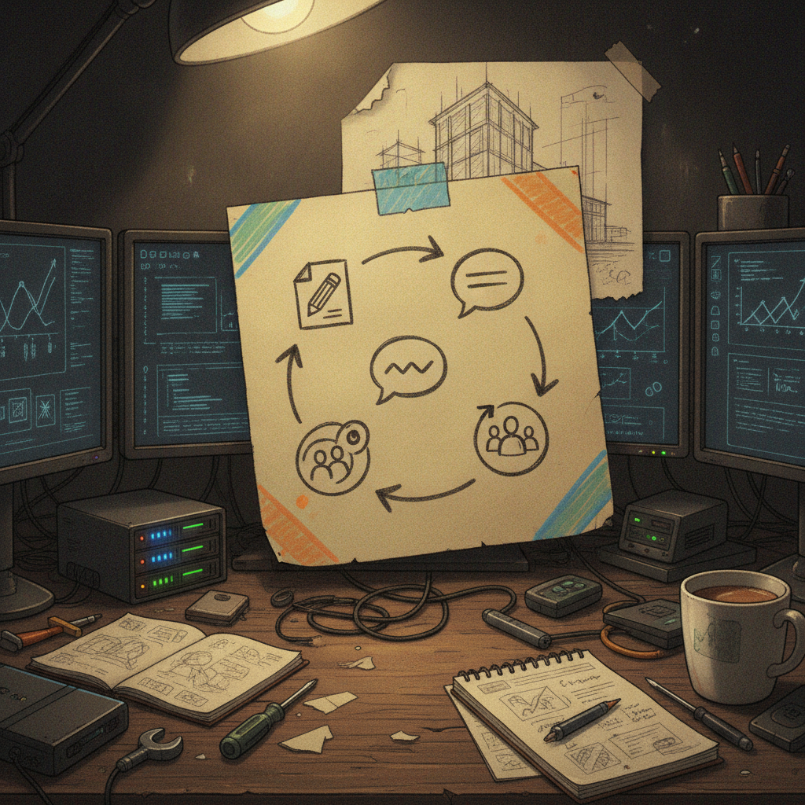

The Quiet Habit Behind a One-Line 'Work in Progress' Post
Some bookmarks are not about a big idea. They are about noticing a small, steady habit that most people scroll past. That is what stopped me here: a short good morning post from @Alfonsojm1 that says, in a handful of words and emojis, that a new bear piece is in progress, tagged to two other accounts, on what looks like just another busy day.
What was bookmarked
@Alfonsojm1 shared a casual greeting to followers (a 'gn' style post, more good morning than good night based on the energy), mentioning a new bear piece in progress and tagging @Grizzle341 and @bytesandblocks. There is an attached image showing the work, but no link, thread, or write-up attached. It reads like a quick daily check-in rather than an announcement. I do not know enough about @Grizzle341 or @bytesandblocks to say what their role is here (collaborators, community, or just friends being tagged), and the post itself does not spell that out, so I am not going to guess.

Why it matters
The reason I saved this is not the bear itself. It is the pattern. A lot of creative and builder communities run on exactly this kind of low-key, repeated presence: short daily posts, work shown in pieces, other accounts tagged along the way. It is not a launch, not a pitch, not a big reveal. It is just someone showing up and saying 'still working on this.'
That pattern matters more than it looks like on the surface. Consistency is one of the few things a small creator fully controls. No algorithm change or market swing touches it. Whether this specific bear turns into something bigger or just stays a fun daily update, the habit of showing the process in public is the real thing worth paying attention to.
The practical breakdown
What it does: Gives a small, regular glimpse into an ongoing creative project instead of only showing finished work.
Who it helps: Other builders and artists trying to figure out how to stay visible without burning out on constant big content.
Why it is worth noticing: Small, tagged, low-effort updates like this are often how community ties actually form, not through big campaigns but through repeated small touches.
What still needs work: From the outside, there is no context on what the bear project actually is, who @Grizzle341 and @bytesandblocks are in relation to it, or where this is heading. That is fine for a daily post, but it means this bookmark alone cannot tell that story.
What I would test first: If you are doing something similar, worth trying is a simple recurring format (same time, same short structure) so followers start to expect and look for the update, the way this kind of post seems to function.
Rick's take
I like this one for a simple reason: it feels human. No pitch, no thread, no big claim, just @Grizzle341 saying good morning and showing the bear they are working on today, with @bytesandblocks tagged in. Sharing a work in progress like this is a good instinct. It keeps the creative work social instead of solitary, and it is the kind of small, steady posting that quietly builds an audience over time.
If the bear is part of a bigger project, I would love to see where it goes. If it is just a daily creative habit, that is worth following too. Either way, there is something nice about watching someone show their work as they make it.
What to watch next
I would keep an eye on whether @Alfonsojm1 keeps posting these daily updates and whether the bear project turns into something with more shape (a series, a collection, a shared effort with @Grizzle341 and @bytesandblocks). Nothing here confirms a bigger plan yet, so this is a 'watch and see' rather than a prediction.
Source and links
Source: X post by @Alfonsojm1, https://x.com/i/web/status/2076169010593361979, retrieved on 2026-07-12. External references: none provided in the source post.